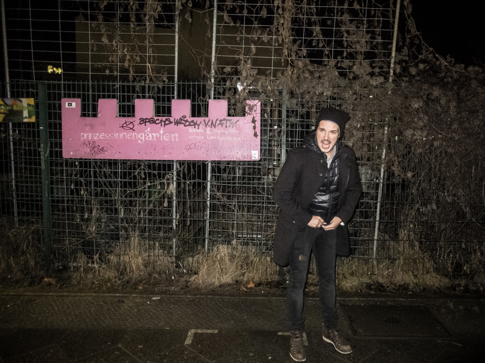
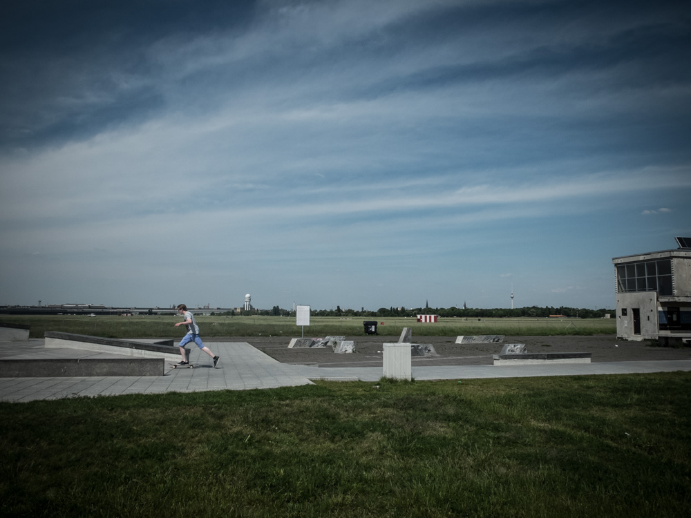

Lost in Berlin
Berlin. Nous y voilà. Un panneau routier indique que je suis arrivé à destination. Et pourtant, selon le GPS, il reste plus de 30 km pour rejoindre Wedding, mon lieu de résidence pendant les six prochains mois. Il faut dire que la ville est un véritable mastodonte, mesurant 45 km de large par 38 de haut. Il y a forcément quelque chose de déroutant face à de telles dimensions.

L’Allemagne était totalement étrangère à mon univers. Ce pays ne faisait absolument pas partie de mon monde de petit garçon méridional. Les seuls Allemands auxquels j’avais eu affaire jouissaient d’une image très caricaturale dans mon esprit : je les imaginais tous un peu obèses, rougeoyants et transpirants, au volant de grosses berlines. La parfaite description du touriste selon Martin Parr1. Autant dire qu’il n’y avait pas là de quoi suscité la moindre curiosité. Mais alors, que s’est-il passé ? Par quel miracle avis-je tant envie aujourd’hui d’aller vivre dans la capitale de ces Allemands ?
L’Allemagne était totalement étrangère à mon univers. Ce pays ne faisait absolument pas partie de mon monde de petit garçon méridional. Les seuls Allemands auxquels j’avais eu affaire jouissaient d’une image très caricaturale dans mon esprit : je les imaginais tous un peu obèses, rougeoyants et transpirants, au volant de grosses berlines. La parfaite description du touriste selon Martin Parr1. Autant dire qu’il n’y avait pas là de quoi suscité la moindre curiosité. Mais alors, que s’est-il passé ? Par quel miracle avis-je tant envie aujourd’hui d’aller vivre dans la capitale de ces Allemands ?
L’Allemagne était totalement étrangère à mon univers. Ce pays ne faisait absolument pas partie de mon monde de petit garçon méridional. Les seuls Allemands auxquels j’avais eu affaire jouissaient d’une image très caricaturale dans mon esprit : je les imaginais tous un peu obèses, rougeoyants et transpirants, au volant de grosses berlines. La parfaite description du touriste selon Martin Parr1. Autant dire qu’il n’y avait pas là de quoi suscité la moindre curiosité. Mais alors, que s’est-il passé ? Par quel miracle avis-je tant envie aujourd’hui d’aller vivre dans la capitale de ces Allemands ?

...
{kind=link}